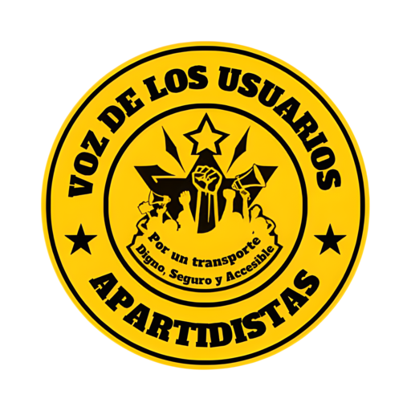
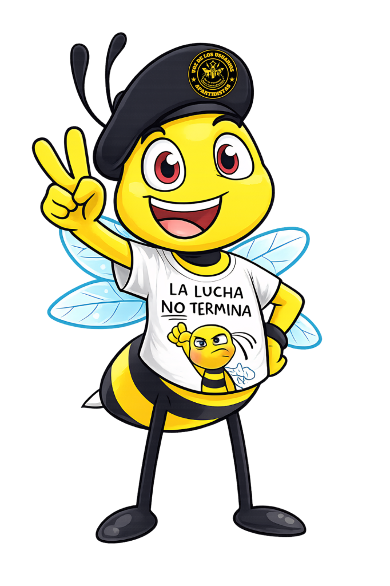

Somos un colectivo ciudadano apartidista luchando por los derechos de los usuarios del transporte público.
Realizar Reporte
🌿 Defendemos el derecho a movernos con dignidad, respirar aire limpio y alzar la voz sin miedo.
Somos un frente ciudadano independiente, sin vínculos con partidos políticos ni intereses particulares. Nuestra fuerza nace de la indignación legítima de la gente y de la convicción de que la ciudadanía organizada puede exigir y lograr cambios reales.
Alzar la voz contra los abusos y deficiencias que golpean a las familias de Nuevo León. Buscamos un sistema de transporte público justo y accesible, pero también luchamos por servicios básicos dignos, seguridad, salud y respeto al medio ambiente.
Ser un movimiento fuerte, unido y reconocido, que represente la voz de quienes exigen justicia, equidad y transparencia. Aspiramos a construir una sociedad donde las necesidades de los ciudadanos sean prioridad en las políticas públicas y donde la dignidad no sea negociable.
Estamos recolectando firmas para presentar una iniciativa ciudadana formal ante el Congreso de Nuevo León. Nuestro objetivo es frenar el tarifazo injusto y asegurar un transporte digno para todas las familias. ¡Tu firma es el motor del cambio!
Ver Iniciativa Completa (PDF)Te invitamos a acudir a cualquiera de nuestros puntos fijos para plasmar tu firma y apoyar este movimiento:
Café y Librería - Barrio Antiguo
Calle Morelos 925, Centro MTY
Busca nuestra mesa de firmas
En diversas plazas y eventos culturales
Espacio de encuentro ciudadano
Calle Padre Mier, Centro MTY
Centro Cultural y Ecológico
Barrio Antiguo, Monterrey
¡Busca a los voluntarios con la playera del colectivo! 🐝
Monterrey será sede, pero el pueblo no olvida. Nos manifestamos contra el gasto excesivo y la opacidad mientras el transporte público colapsa. ¡No hay mundial sin dignidad!
Envía tu queja o reporte. Se enviará directamente a cvdlu.buzon@gmail.com
Visitantes a la fecha